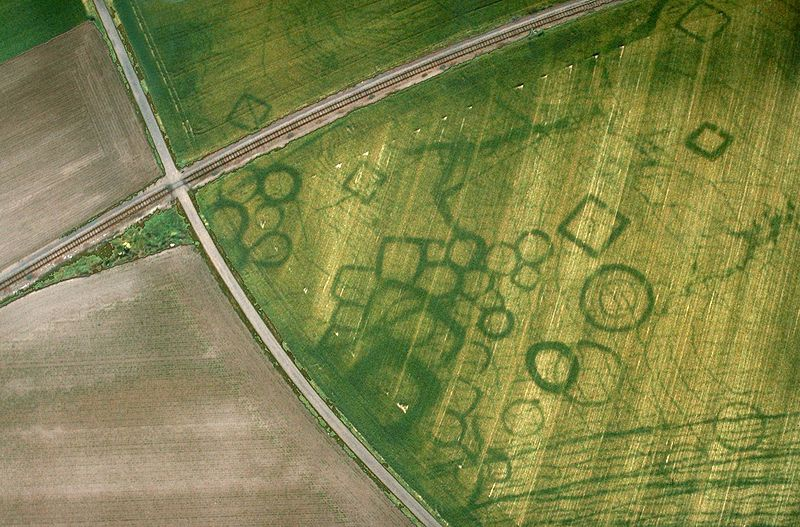

Archaeology and GIS work hand in hand to allow us to view the spatial aspect of human behaviour.
Archaeological Assessment
Here at SymbioGIS, we use predictive modeling to more accurately determine a location's potential for archaeological excavation. Our team is focused on
analyzing an area with respect to its cultural, historical, and agricultural relevance, and producing archaeological sensitivity maps based on these
qualities in conjunction with geospatial information. We also look at the impact of any future excavation and development on cultural land use, wildlife
populations, and agricultural preservation.
Site Identification
Through the use of LiDAR and satelite imagery, possible locations of previous landmarks and buildings are identified. GIS helps us to analyze the areas in which
sites are found to determine why and how the location was chosen and how it differs from contemporary finds. Differences in topography, hydrography, or animal
populations influence the decisions made when initially choosing a site - these datasets are used within our analysis to help determine area use within a greater
archaeological overview study.
